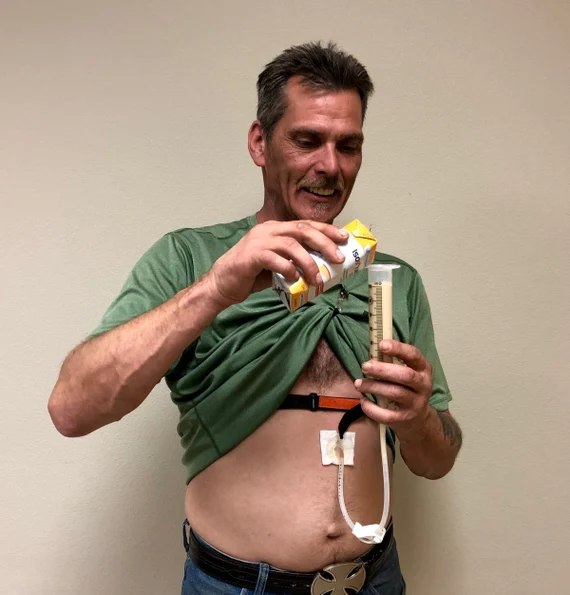
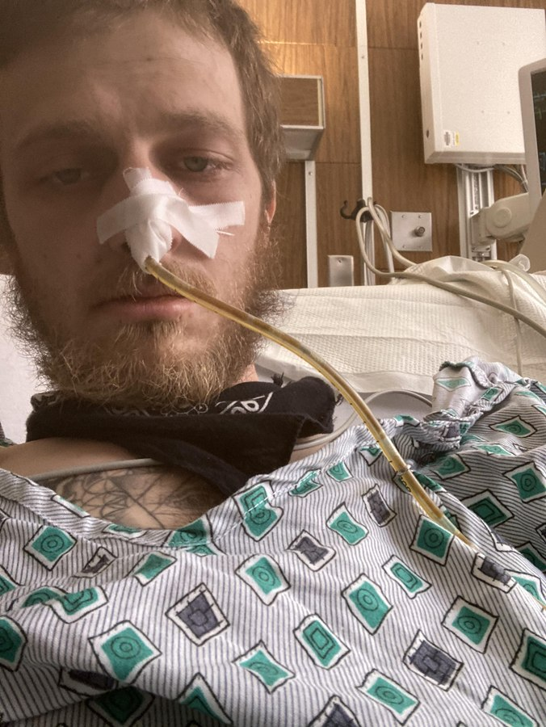
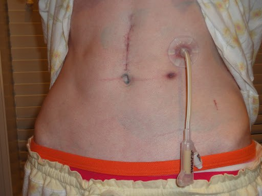
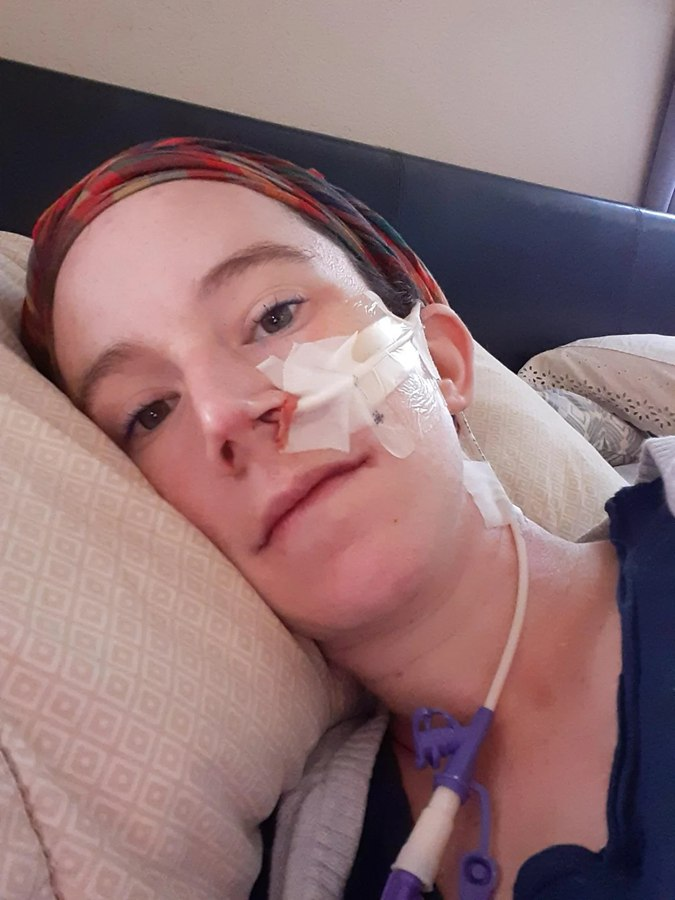

Goal for nutrition in the critically ill: preserve lean mass. Breaking down lean muscle mass puts the patient in a catabolic state, with a lot of adverse reactions.
Question
What to Know
When to start thinking about it
Once airway, breathing and circulation are maintained.
Blood pressure stabilized, even on pressors. PaO2 at 55 or 60, even ventilated.
Who is responsible
Nurse and multidisciplinary teams. With several teams caring for one patient, nutrition can get passed off.
Nurse's part: make sure it is brought up. Are we thinking about feeding this patient?
Why it matters
Malnutrition is very common in hospitalized patients.
Associated with increased readmissions, length of stay, healthcare costs and mortality.
Catabolic Stress State
Critical Illness
A stress response, such as major surgery or major trauma. Metabolic demands are already high.
Lean Mass Broken Down
Altered protein and energy metabolism. The risk of malnutrition rises.
Catabolic Stress State
An inflammatory response and increased metabolic demands. A malnourished, catabolic state furthers the inflammatory response and the metabolic need.
Nutrition Screening
Goal: within 48 hours of admission, especially to the ICU. Very important for a full evaluation.
Dietary or nutrition usually involved: they document nutrition parameters, determine malnourishment risk factors, identify deficits and establish needs.
Involve the medical team. Psychosocial and socioeconomic factors influence nutritional status too.
Baseline nutrition is a huge risk factor. A nutritionally healthy patient has more reserve.
Not just low body weight: some of the most malnourished patients are morbidly obese. Body weight and BMI are not a great indicator.
Assessment
Finding or Condition
How It Affects Nutrition
GI motility
Assess bowel sounds: present? Hypoactive, hyperactive or absent? Is there a reason, and how is it being addressed?
Medications
Hemodynamically unstable patients often need blood pressure support via IV meds.
Vasopressors shunt blood away from the gut: the vessels clamp down, and the gut is one of the first areas affected. The kidneys, heart, lungs and brain matter more. A very high risk of lower GI motility.
On pressors for several days, no bowel sounds: a concern.
Anesthesia and opioids slow the gut. Opioids every 4 hours? Frequent anesthesia?
Surgery or trauma
GI surgery or trauma affects the gut directly.
A lot of blood lost: blood is shunted away from the GI system to more important organs, so the gut is at higher risk.
Fluid status
Hypovolemic states impact nutritional status.
Able to take PO?
Wounds
Wound healing depends on nutrition, and a wound adds nutritional demand.
Correct and prevent nutritional deficits in patients with wounds.
Examples: an infected wound, a pressure ulcer, an infected surgical wound. Not a normal surgical incision.
Age
Frailty: physiologic reserve decreases with age. The older the adult, the greater the concern for nutritional status.
Pregnancy
Alters nutritional needs quite intensely. Assess and address them.
Nutrition Labs
Lab
What It Tells
Albumin
Longer term: about the last 3 months. Low means malnourishment is more likely.
Prealbumin
About the last 72 hours. Trend it when nutrition is a worry: once feeding starts, it should rise.
Triglycerides
What the baseline diet is like. Low: not a lot of good fats on board.
Sodium, potassium, magnesium, phosphate
Typically low in chronically malnourished patients. Monitor them.
Glucose
Hypoglycemia is a big deal. Chronic hyperglycemia shows a risk to watch for too.
Early Interventions and Assessments
Intervention
What to Know
Dietary or nutrition consult
Screeners that bedside nurses complete may trigger an automatic consult.
Needed but not triggered? Press the team, and ask about placing a Dobhoff tube.
Example: 24 hours in the ICU, on a couple of pressors, not eating for several days.
Close dietary monitoring
Taking PO but still critically ill or hemodynamically unstable: monitor closely.
Chart: fluid intake, the percent of meals eaten, appetite.
Appetite is often lost for a long time after major trauma or surgery. Educate: without better intake, the patient gets sicker, stays longer, or needs a feeding tube through the nose.
24-hour calorie count
A high-level intervention. May be required to make sure the metabolic demands are met.
Protein and vitamin supplements
Common in critically ill patients.
Juven: for wound healing. Amino acids and some electrolytes. Very common with a pressure ulcer.
Beneprotein: instant protein powder, for any patient in a catabolic stress state. Helps wound healing and healing in general.
Feed the Gut When It Works
Feed the gut when it works. If the gut is working, that is where the nutrition goes.
How Do You Know the Gut Works?
Bowel movements.
Bowel sounds.
When Is the Gut Not the Place to Feed?
An interrupted system: a major bowel surgery, a bowel resection, an esophagectomy, part of the stomach removed.
On very high-dose pressors: not a great candidate for enteral nutrition. Blood is shunted away from the gut, so its blood supply is poor.
No good blood supply to the gut, no feeding it: it can cause ischemia, vomiting and nausea. The feed just sits there.
A very high lactate: the gut is likely not well perfused. Lactate rises in anaerobic metabolism. Not an indicator alone, since bowel sounds may be fine, but a cue to check.
Enteral Nutrition
Start within 24 to 48 hours of admission if the patient is not taking PO. An earlier start is associated with less pneumonia, lower mortality, a shorter ICU length of stay, and GI tract integrity maintained long term.
Modalities
Tube
Feeds Into
What to Know
G tube
Stomach
A PEG is usually the choice when the stomach is available.
NG tube
Stomach
Least favorite way to feed, especially longer term.
Often to wall suction for decompression: no feeding at the same time.
J tube
Jejunum, in the small intestine
For stomach or esophageal problems, long-term issues, when the stomach is not available.
Dobhoff tube
Post-pyloric: always the goal
Usually the best friend: very good for meds and tube feeding.

G tube. Right into the stomach.

NG tube. Into the stomach.

J tube. Into the jejunum.

Dobhoff tube. For meds and tube feeding.
Feeding Rates
Rate
What to Know
Trophic
First level: may be what starts in the first 24 hours.
Targeted hourly rate
A set hourly rate for the assigned tube feed.
Problem: does not account for stopping and starting for procedures and meds, so a lot of nutritional support can be lost.
Volume-based feeding
A daily volume goal. Compensates for the stops and is more flexible. The trend, and done more already in peds.
Hourly rate set by the nurse from how much has gone in since midnight, how long the feed will be off for procedures, and so how much is left to give by the end of the shift.
More responsibility on the nurse, better for the patient long term.
Tube Care
Care
What to Know
Skin
Check the skin around every tube, especially in the critically ill.
Pressure ulcers under Dobhoff tubes are common, and not always preventable.
PEGs and J tubes: irritation, or skin breakdown under the securement device?
Flushing
Don't lose the access: the tube is often how the meds go in too. Flush and maintain it frequently.
At least every 8 hours, most often every 4, with meds every 4 hours. Behind every med.
30 mL each time is the goal. Less with a fluid restriction.
Meds
Where is the tube located? Will it affect administration? Some meds need the stomach to be absorbed appropriately. Everyone, pharmacy included, knows how the patient is fed: a J tube or a PEG.
No extended-release meds down these tubes.
More than one tube, such as a PEG and a J tube: clarify which is for what.
Position
Head of bed 30 degrees or higher, if able.
Flat is not a contraindication to feeding through a Dobhoff tube. Be more aware of the aspiration risk.
Flat, feeding into an NG tube is probably not the best bet.
Placement
Check the markings on an NG or Dobhoff tube: at the same mark, not advanced, not pulled out.
Orders
Some patients are strict NPO. Some may have ice chips, or even be encouraged to eat and drink with a Dobhoff tube.
Know the orders and why: a swallowing issue, or malnutrition?
Gastric residuals: no longer recommended. Never with a Dobhoff tube: it is too small, and the access is lost. Only possible with an NG tube.
When the Feed Is Not Tolerated
Diarrhea, such as every hour after the feed was increased: talk to dietary and get the team involved. A different kind of tube feed? Bulk up with protein and fiber?
Constipation: add a stool softener.
Motility: meds such as metoclopramide may be added.
Tube feeds come in different types: use the order appropriately. Not tolerating it? Ask for a different kind, and keep working toward the goal volume to prevent malnutrition.
Parenteral Nutrition
For patients who cannot take enteral nutrition: protein, fat, minerals, vitamins and carbohydrates via IV.
Consideration
What to Know
TPN
Total parenteral nutrition: the big yellow bag. More common, and lower fluid volume.
Peripheral parenteral nutrition is not indicated for adults.
Highly concentrated: high osmolality, lots of dextrose.
Still a lot of fluid volume: take it into account when volume status is a worry, such as on CRRT.
Blood sugars
Monitor closely: lots of dextrose.
Line and tubing
A PICC line or central line is preferred.
Change the tubing every 24 hours, per protocol: dextrose attracts bacteria.
Lipids
Usually given with TPN: fatty acids, the white bag.
Careful with propofol, a fat-soluble med. Lipids given with it can affect its absorption, and whether it works.